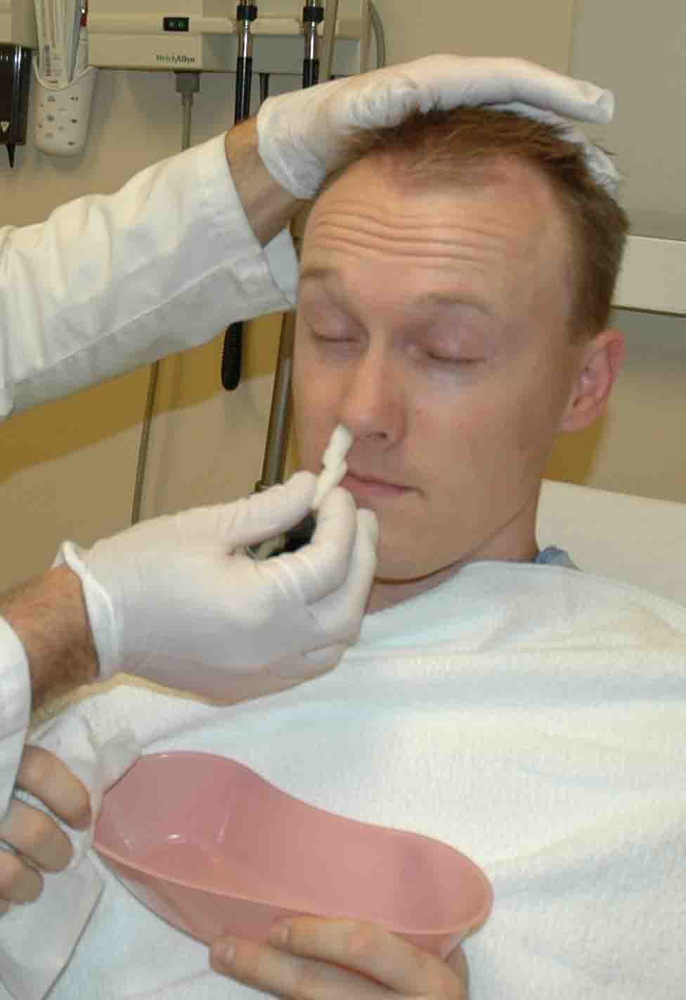

NOSEBLEEDS TREATMENT
1. Stop the Bleeding
- Have the person sit up straight and lean forward slightly. Don't have the person lie down or tilt the head backward.
- With thumb and index finger, firmly pinch the nose just below the bone up against the face.
- Apply pressure for 5 minutes. Time yourself with a clock.
- If bleeding continues after 5 minutes, repeat the process.
2. Call a Health Care Provider
- Nosebleed doesn't stop after 10 minutes of home treatment
- The person is taking blood thinners, such as warfarin (Coumadin) or aspirin, or has a bleeding disorder
- Nosebleed happens after a severe head injury or a blow to the face
3. Medical Treatment
- The health care provider may use specialized cotton material, insert a balloon in the nose, or use a special electrical tool to cauterize the blood vessels.
- 
-
4. Follow Up
- Broken noses often are not fixed immediately. The health care provider will refer the person to a specialist for a consultation once the swelling goes down.